LiberarReator
UMLInteraction
Projeto2
::
Sequence Diagram
::
Operador
::
LiberarReator
Description
none
Diagrams

LiberarReator
Fragments
InteractionUse3
InteractionUse1
InteractionUse4
Participants
Lifeline1: Operador
Lifeline2: Operador
Reator
Lifeline4: Tanque
Messages
AbrirValvulas (Lifeline2→Lifeline1)
Abastece (Lifeline1→Lifeline4)
TransferirFluido (Lifeline4→Reator)
Capacidade máxima atingida (Reator→Reator)
ProcessaMistura (Reator→Reator)
Properties
Name
Value
name
LiberarReator
stereotype
null
visibility
public
isReentrant
true
Owned Elements
LiberarReator
(link to AbastecerLavagem)
(link to AbrirValvulas)
(link to ConectarDecantador)